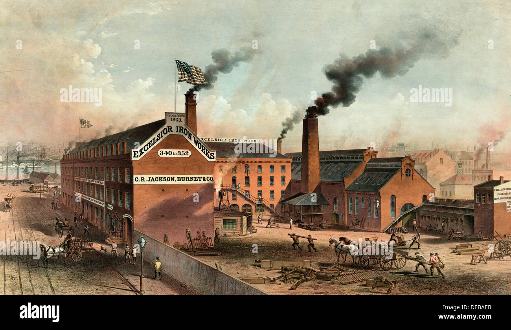

Alla fine del 1600,ci fu una grande crescita demografica,infatti la popolazione europea crebe notevolmente e in circa 140 anni diventò il doppio. All’inizio del 1700 l’Inghilterra è il paese più ricco d’Europa grazie ad una agricoltura estremamente avanzata: vengono utilizzate le recinzioni, la rotazione quadriennale(evoluzione della rotazione triennale) e nuove tecnologie che permettevano di ottenere produzioni più abbondanti e di migliore qualità. L’Inghilterra dominava anche il commercio grazie alle colonie oltreoceano e al monopolio sulla tratta degli schiavi con le colonie spagnole. Le navi inglesi erano di più e più efficienti rispetto a quelle degli altri paesi perciò permettevano di dominare i mari.
Il lavoro a domicilio, tipico del medioevo, non era più sufficiente a soddisfare la domanda di una popolazione sempre più vasta ed esigente e occorreva aumentare la produttività. L’industria tessile fu rinnovata grazie alla “navetta volante” inventata nel 1733 da John Kay, che permise di produrre di più utilizzando meno operai. L’energia idraulica veniva sfruttata per muovere i primi rudimentali macchinari, ma presto non fu più sufficiente perciò si iniziò ad usare il carbone che, bruciato in apposite caldaie scaldava l’acqua producendo vapore; La macchina a vapore fu perfezionata nel 1769 da James Watt e da lì utilizzata in ogni settore dell’industria. La rivoluzione industriale permise di produrre in serie e a costo minore aumentando notevolmente la ricchezza dei paesi e il benessere delle popolazioni. Le fabbriche,fatte costruire dagli imprenditori, divennero il luogo di lavoro nel quale decine, centinaia o migliaia di operai lavoravano secondo turni spesso lunghi e massacranti che potevano arrivare anche a 18 ore con salari bassi e poca sicurezza; La situazione era ancora più dura nelle miniere, spesso teatri di crolli, allagamenti e esplosioni di gas. L’industria chimica crebbe moltissimo nel 1700 e 1800 grazie anche agli studi di Lavoisier, ma fu soprattutto l’elettricità, studiata approfonditamente da Franklin e Volta, a portare una grande rivoluzione in campo industriale e civile. .